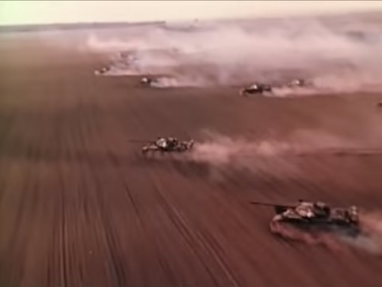

Тут собраны новостные статьи нашего сегмента!
домой назад
Смертельное нашествие древних кабанов!
body>
Во второе тысячилетие до нашей эры древние кабаны начали легендарное нашествие на аддонскую величественную империю, которое уничтожило на тот момент самое могущественное и господсвующие государство, причём ущерб был на столько сильный что аддон и сегодня поправиться не может и вынужден уйти в нейтралитет. Как упоминает древняя летопись после нашествия кабаны ушли в спячку на столетия. И с тех пор они не пробуждались.
Однако позавчера стая древних кабанов накинулась на глав. штаб сториес оф зу мун .
Пока неизвестно когда и почему пробудились древние кабаны. Но в городе где находится штаб и других ближайших вчера в 5:00 ввели военное положение. Сейчас на место проишествия надвигается один батальон центра. При ухудшение ситуации планируется начать массовую временную эвакуацию жителей для сохранения жизни.
Эксперты прогназируют что центру моддинга придётся вложить много средств для ликвидации аварии. И это может сильно ударить по экономическому состоянию страны. И если это сильно ударит, то возможно угнетатели воспользуются ситуацией и развяжут войну с центром.
Около недели назад деревня Редволда сообщала что видела огромных кабанов, которые были похожи на древних, однако это не восприняли всерьёз. Также солдаты ехавшие на службу видели какие-то огромные следы, но не предали этому значения.
По данным авторитетных источников погибло 356 человек.

Военный батальон Центра Моддинга едет на войну с древними кабанами!